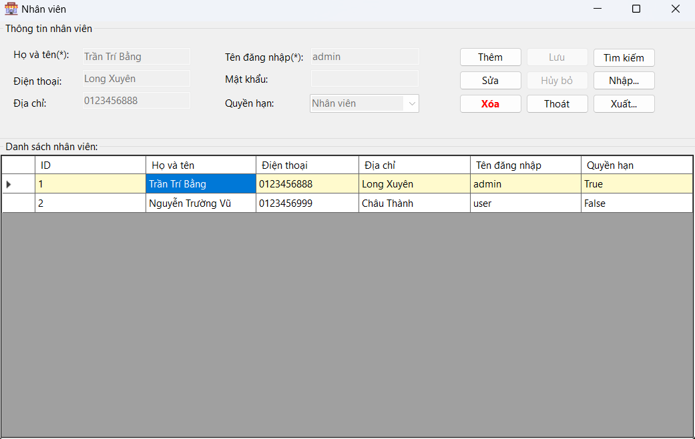

Hướng dẫn sử dụng màn hình Nhân viên.
1. Thêm nhân viên mới: Nhập họ và tên, số điện thoại, địa chỉ, tên đăng nhập, mật khẩu và quyền hạn của nhân viên mới vào các trường tương ứng. Nhấn "Thêm" để thêm nhân viên mới vào danh sách.
2. Chỉnh Sửa Thông Tin Nhân Viên: Chọn nhân viên cần chỉnh sửa từ danh sách nhân viên. Thông tin nhân viên sẽ hiển thị ở phần Thông tin nhân viên. Chỉnh sửa các thông tin cần thiết và nhấn "Lưu".
3. Xóa Nhân viên: Chọn nhân viên cần xóa từ danh sách nhân viên. Nhấn "Xóa" để xóa nhân viên khỏi danh sách.
4. Tìm Kiếm và Lọc Nhân viên: Nhấn "Tìm kiếm" và nhập các tiêu chí tìm kiếm hoặc lọc (như tên, số điện thoại, địa chỉ). Nhấn "Tìm" để tìm kiếm và lọc danh sách nhân viên theo các tiêu chí đã nhập.
5. Nhập/Xuất Dữ liệu Để nhập dữ liệu từ tệp, nhấn "Nhập…" và chọn tệp cần nhập. Để xuất dữ liệu ra tệp, nhấn "Xuất…" và chọn định dạng và vị trí lưu tệp.
6. Thoát ứng dụng: Nhấp vào nút "Thoát" để đóng ứng dụng.
Các nút "Lưu" và "Hủy bỏ" sẽ hiển thị khi bạn thực hiện thao tác thêm hoặc sửa thể loại sách để lưu thay đổi hoặc hủy bỏ thao tác hiện tại.